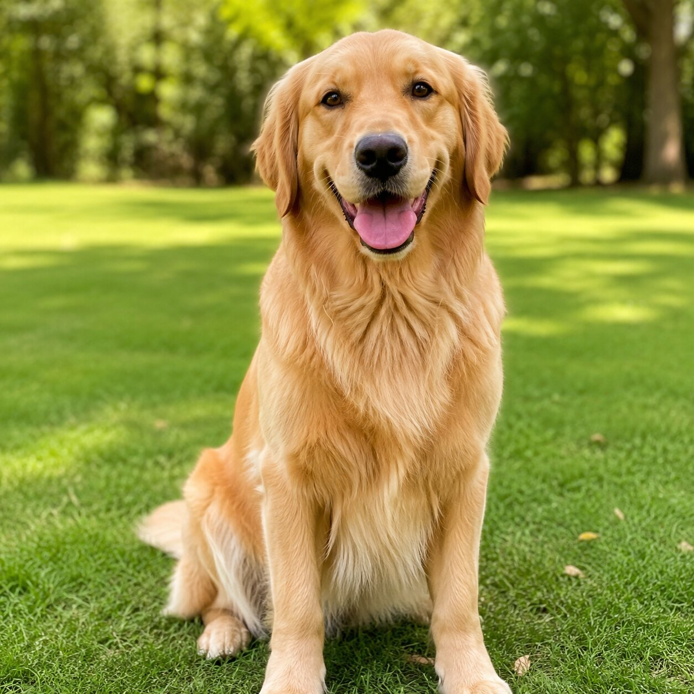

KIDS' ANIMAL OF THE WEEK
Dog
Canis lupus familiaris
Where it lives
Favorite foods
Superpower
🧠 Did you know?
FOR KIDS & GRANDKIDS
Meet a favorite animal every week! Discover three fun facts, see a great photo and watch a hand-picked National Geographic Kids video.
Meet this week's animal
KIDS' ANIMAL OF THE WEEK
Canis lupus familiaris
12 FAVORITES
Select any animal to see its picture, facts and Nat Geo Kids video. Come back every Monday for a new featured animal!